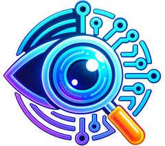

A privacy-preserving browser vision agent: local visual perception and PII protection happen before any optional server reasoning. Only sanitized, anonymized visual context is allowed to leave the client.
Search across 12,400+ trains, real-time availability
AI agents are becoming omnipresent in the current era and can play an important role in our digital interactions. If an agentic AI pipeline has access to our visual context, screen states, they can assist users in complex workflows and automate many tasks. Most of the agentic AI pipelines are deployed on server side which limits the type to data that a user can share with it. It would open a new dimension of possibilities, if a local agent is deployed on user machine particularly browser which can eliminate the need to share the sensitive data with the server. Local system generally has fewer resources than server and is unable to host a full-fledged pipeline therefore only the non-sensitive data such as structure of the screen, application fields etc can be sent to server for processing.
Modern browser APIs (such as WebGPU and WebAssembly) and local inference libraries (like ONNX Runtime Web and Transformers.js) have unlocked the ability to run lightweight machine learning models directly on the client. The aim is to bridge these two environments: leveraging the reasoning power of cloud or server based AI while strictly enforcing data privacy at the client side.
Participants are required to build a privacy-preserving vision agent which runs on browser. This involves implementing a client-side architecture where a local Vision Transformer (ViT) or equivalent computer vision model 'reads' the user's screen and takes decision based on that. If it requires the visual context to be sent to server, it shall sanitize the sensitive/PII data using DOM tags or any other method, before any network request is made. It should dynamically detect and redact sensitive elements. For example, blurring faces, blacking out passwords, and masking PII etc. Only this anonymized, unidentifiable data should be transmitted to the central server which should be aware for this redaction scheme and can process data accordingly. The server will then process the sanitized context and return actionable commands for the browser agent to execute. Participants must balance the trade-offs between inference latency and the accuracy.
A successful submission should include a working prototype consisting of client side extension and server that demonstrates the following:
Client-side (extension/JS) running in popular browsers (chrome, Firefox) components:
Server-side implementation components: